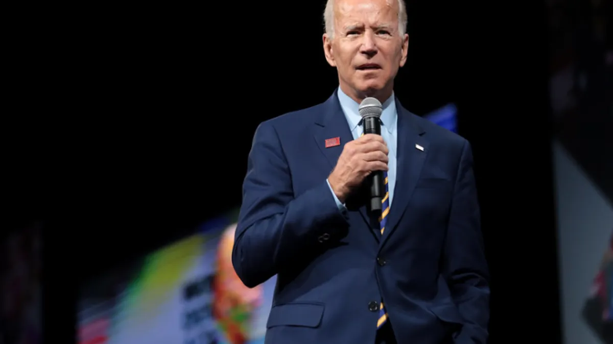

Date: October 5, 2023
On October 5, 2023, the U.S. Department of Energy (DOE) announced a $30 million initiative to expedite the interconnection process for new energy generation projects. This initiative leverages artificial intelligence (AI) to streamline application timelines, aiming to enhance the efficiency of integrating renewable energy sources into the national power grid.
The AI for Interconnection (AI4IX) program seeks to modernize the interconnection application process by developing partnerships among software developers, grid operators, and energy project developers. The goal is to significantly reduce the time required to review, approve, and commission new generation interconnections across the country. This initiative is part of the broader efforts to accelerate the deployment of clean energy technologies and improve grid resilience.
The integration of AI into the interconnection process is expected to have several key implications:
The DOE's AI4IX program marks a significant step toward modernizing the U.S. energy infrastructure. By harnessing AI to expedite the interconnection process, the initiative aims to accelerate the deployment of renewable energy projects, contributing to a more sustainable and resilient power grid. Stakeholders in the energy sector should monitor this development closely, as it may set a precedent for future AI applications in energy infrastructure.